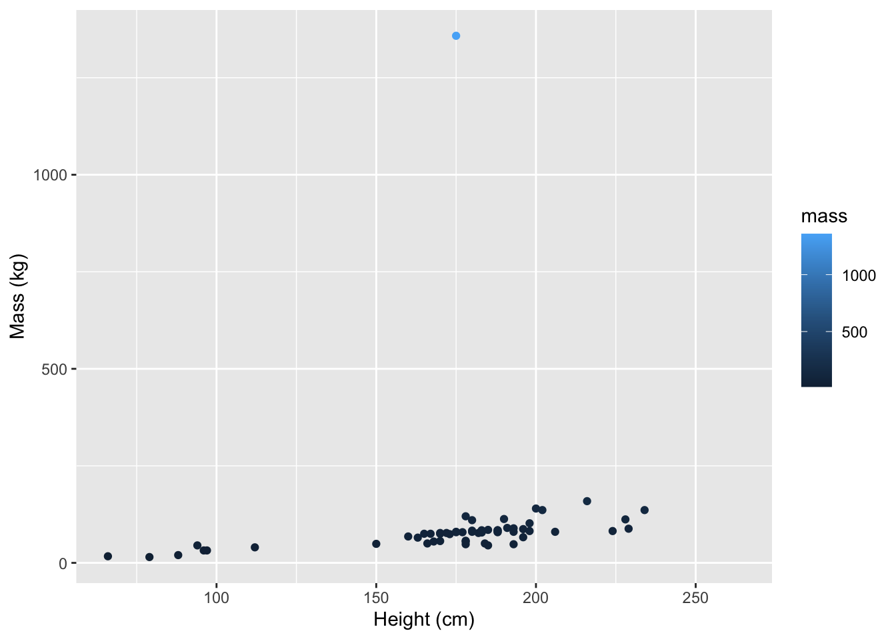

More Quarto customization, summary statistics continued, in-line reporting
1. Setup
Create a new repo on GitHub called eds212-day5 (with a README)
Clone to create a version-controlled R project
Add a new Quarto document
Remove everything below the first code chunk
Add a code chunk at the top and import the {tidyverse} package
Save & render
What does the output look like? A mess:
library(tidyverse)
── Attaching core tidyverse packages ──────────────────────── tidyverse 2.0.0 ──
✔ dplyr 1.1.4 ✔ readr 2.1.5
✔ forcats 1.0.0 ✔ stringr 1.5.1
✔ ggplot2 3.5.2 ✔ tibble 3.3.0
✔ lubridate 1.9.4 ✔ tidyr 1.3.1
✔ purrr 1.0.4
── Conflicts ────────────────────────────────────────── tidyverse_conflicts() ──
✖ dplyr::filter() masks stats::filter()
✖ dplyr::lag() masks stats::lag()
ℹ Use the conflicted package (<http://conflicted.r-lib.org/>) to force all conflicts to become errors
We might not want all of that stuff that R is reporting to show up in my rendered document. Not a problem - we get to define exactly what shows up in our knitted html, either across the entire document or for each specific code chunk.
2. Customizing what shows up in our Quarto doc
We can update Quarto execution options to control what shows up (and doesn’t) in our rendered document.
For example:
echo: false will hide source code in the rendered doc (but still execute the code)
warning: false will hide printed warnings
Setting these execution options in the YAML will make them the default for all code chunks. You can also override the default using the hashpipe #| within a code chunk, followed by the execution option (e.g. #| echo: false ).
Update the code chunk options so the warnings and messages are hidden, but the library(tidyverse) code does show up in your knitted document. Render to check.
In a new code chunck, explore the starwars data set (in {dplyr}, which is a tidyverse package). Use several of the tools we learned yesterday (e.g. head(), tail(), dim(), etc.). Consider this “exploratory” work, that you would not want to show up at all in a final knitted document. Update the code chunk header with an option to not including anything from this code chunk (include: false). Render to check.
TipSolution
```{r}#| include: false# Return the first 6 lines of `starwars` ----head(starwars)# Check the dimensions ----dim(starwars)```
In a new code chunk, create a {ggplot2} scatterplot of character mass (y-axis) versus height (x-axis). Update so that the color of the points changes based on the value of mass (this is unnecessary, but just for customization practice). Update axis labels (with units). Remember, use ?starwars for more information. Check the warnings that show up when you run your code. What are they telling you? Then, update the code chunk option so that only the graph appears in your rendered document (i.e. no code or warnings are printed in your rendered doc). Render to check.
TipSolution
```{r}#| warning: false#| echo: falseggplot(starwars, aes(x = height, y = mass, color = mass)) +geom_point() +labs(x ="Height (cm)", y ="Mass (kg)")```

In a new code chunk, create a histogram of character heights. Update the fill color to purple, and the line color to red (this will look awful - do it anyway for practice). Update the x- and y-axis labels. Update your code chunk options so that only your code and the output graph shows up in the knitted document (i.e. no warnings). Render to check.
Set warning: false as a default in your Quarto doc’s YAML. Notice that we have set warning: false in pretty much all of our code chunks (you’ll likely want to suppress these warnings most of the time because they gunk up your rendered docs). Let’s set warning: false as the default option:
Now try removing warning: false from all of the code chunks, then render. What happens? Try adding warning: true to just your ggplot code chunk in step 4, above. Render again. What happens now?
3. Adding a figure caption and alt-text
You can add a figure caption or alt-text to a graphic using #| fig-cap: "caption text" and #| fig-alt: "figure alt text".
4. Finding summary statistics for individual columns
Here, we’ll learn how to find some summary statistics (mean, standard deviation, variance). You can refer to a single column in a data frame using df$colname. For example, if we have a data frame cats with a column mass, I can refer to the mass column in cats using cats$mass.
Let’s take a look.
In the Console, try calling a couple columns individually from starwars (you don’t need to store these). E.g. starwars$name, starwars$birth_year, etc.
We’ll learn a bunch of tools that help to automate finding summary statistics across multiple columns (e.g. dplyr::across()) or groups within the same column (e.g. dplyr::group_by() |> summarize()), but for now let’s say we just want a single mean from a single column. Use the mean() function applied to the column to return the value.
In a new code chunk, store the mean of the height column as sw_height_mean
sw_height_mean <-mean(starwars$height)
Call the value back to yourself (in the Console). What does it tell you the mean height is? Uh oh…
Check out the documentation for mean(). What is the behavior (default) for dealing with NA (missing) values?
Update your code so that NA values are removed, by adding the argument na.rm = TRUE within the mean() function. Does the value make sense given the histogram you created above?
In your code chunk, add code to find the median (median()), variance (var()), and standard deviation (sd()) for Star Wars character heights. Store them using a consistent naming system as your sw_height_mean object above. Check all outputs.
Let’s say you wanted to report the mean and standard deviation of a variable in text (remember - summary statistics hide things! Always consider accompanying summary statistics with visualizations or tables that show more).
Would you want to manually type the value you found from your code into your Quarto document? Why or why not?
We want our outputs in text to be as reproducible and automatically update-able, just as anything else in our work. This way, if anything changes, we aren’t going to be manually (and treacherously) copying and pasting things, hoping that we’ve are updated everything correctly.
Reference stored objects in text by adding inline R code with single backticks, a lowercase r between them, and then the name of the object you want to have show up. For example, the value below:
The mean height of starwars characters is 174.6049383.
is embedded using the syntax:
`r sw_height_mean`
ImportantWarning: Pay attention to significant figures!
Are you presenting your outcomes at a reasonable level of resolution? Do you need to round your output to make it a responsible reflection of the measurements you have?
You can round values using the round() function. For example, round the stored height value to three significant figures:
Stage, commit, pull, push. Check to make sure your changes exist on GitHub.
7. An intro to GitHub Collaboration (without conflicts)
Find a partner and (re)introduce yourselves . You’re about to become official collaborators .
Assign one person as Partner 1 and one as Partner 2. Partner 1 will be the repository owner and invite Partner 2 as a collaborator on their eds212-day5 repo. To do so, follow these steps:
Partner 1:
Navigate to your eds212-day5 repository (on GitHub), then click Settings > Collaborators (left-hand menu) > Add people > add Partner 2 by username/full name/email
Partner 2:
Check email for invite or click on the notifications button on GitHub to find invite (top right corner button that looks like a drawer). Once Partner 2 accepts the invite, they will have push access to Partner 1’s repo.
Clone the repository (NOTE: the repo will not appear under Partner 2’s repositories tab; it only lives on the original owner’s repositories tab)
Let Partner 1 know that you’re going to make some updates to the repo – communication is key to avoiding git conflicts!
Add a new Quarto doc called collaboration.qmd to the repository, delete all the pre-populated content, and add some text (doesn’t matter what it is).
Add / stage, commit, and push files to GitHub.
Let Partner 1 know that your changes have been pushed to GitHub and that they are good to pull those changes / make their own updates
Partner 1:
Pull Partner 2’s changes from GitHub using either the blue arrow (RStudio Git tab) or by running git pull in the RStudio Terminal – you should now have collaboration.qmd in your local repo!
Let Partner 2 know that you’re going to make some updates (again, communication is key!).
Make a change to collaboration.qmd, add, commit, and push to GitHub.
Let Partner 2 know that your changes have been pushed to GitHub
Partner 2:
Pull Partner 1’s changes into your local repo using either the blue arrow (RStudio Git tab) or by running git pull in the RStudio Terminal. You should now see Partner 1’s changes to collaboration.qmd.
Congrats! You just used GitHub to collaborate on code! Now switch roles and try it again.